72㎡
キッチンは、
リビングを向く。
壁に向いていた台所を対面にし、
料理をしながら部屋の全部が見えるようにしました。
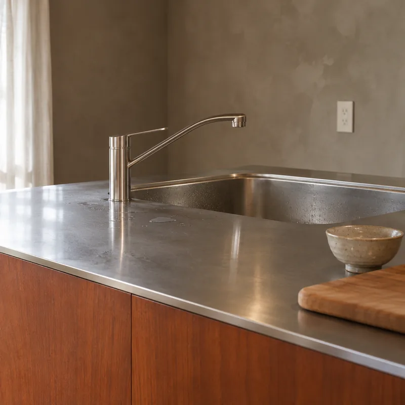
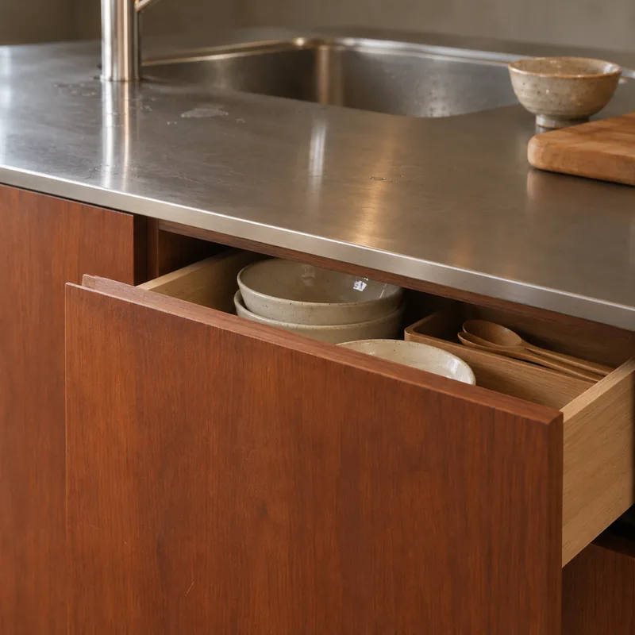
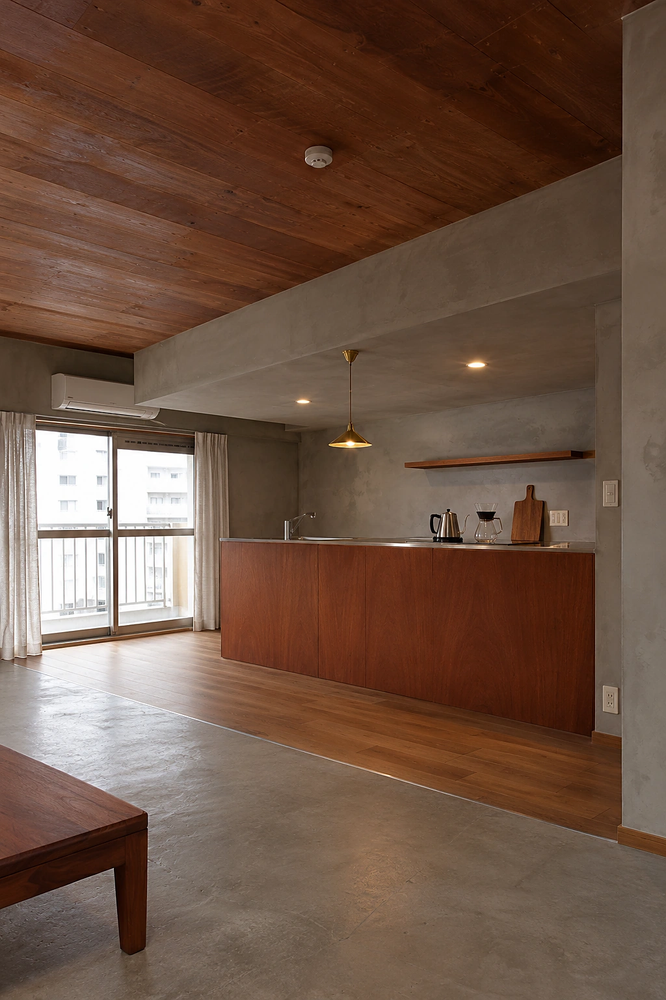
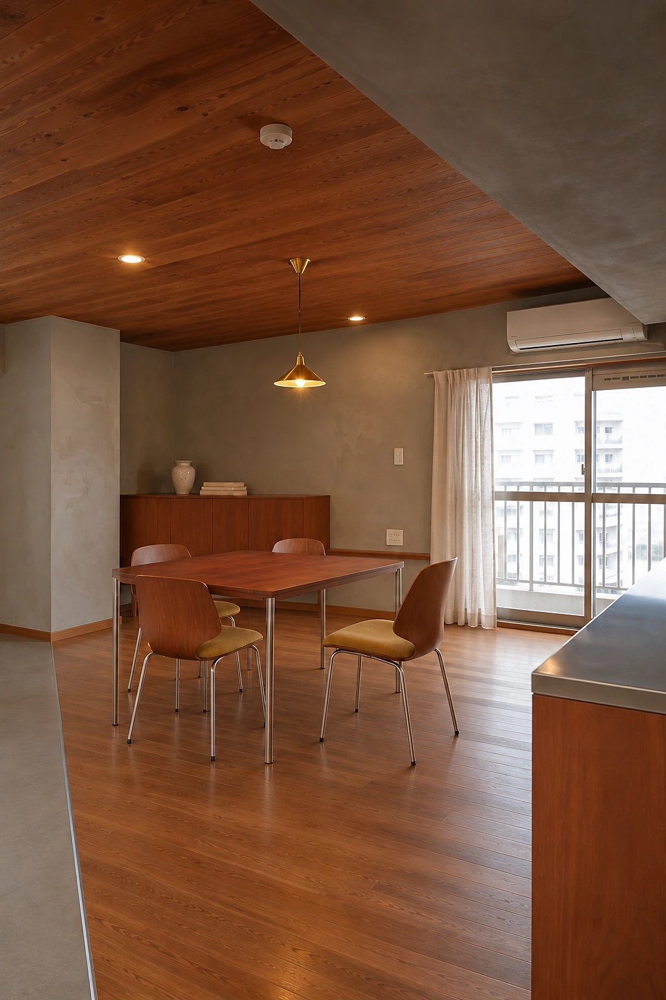
古い部屋を、
いちばん好きな
場所に。
福岡・平尾
中古マンションのリノベーション
福岡・平尾 中古マンションのリノベーション
※60分・来店またはオンライン。概算の費用と進め方が分かります。
中古マンションのリノベで多いのは、
気に入った物件を買ったあとに、
工事に回せる額が足りなくなること。
物件の値段と工事費は、
ひとつの予算の中で配分を決めるものです。
Madobe は、物件を探す前に、
総額を一緒に決めるところから始めます。
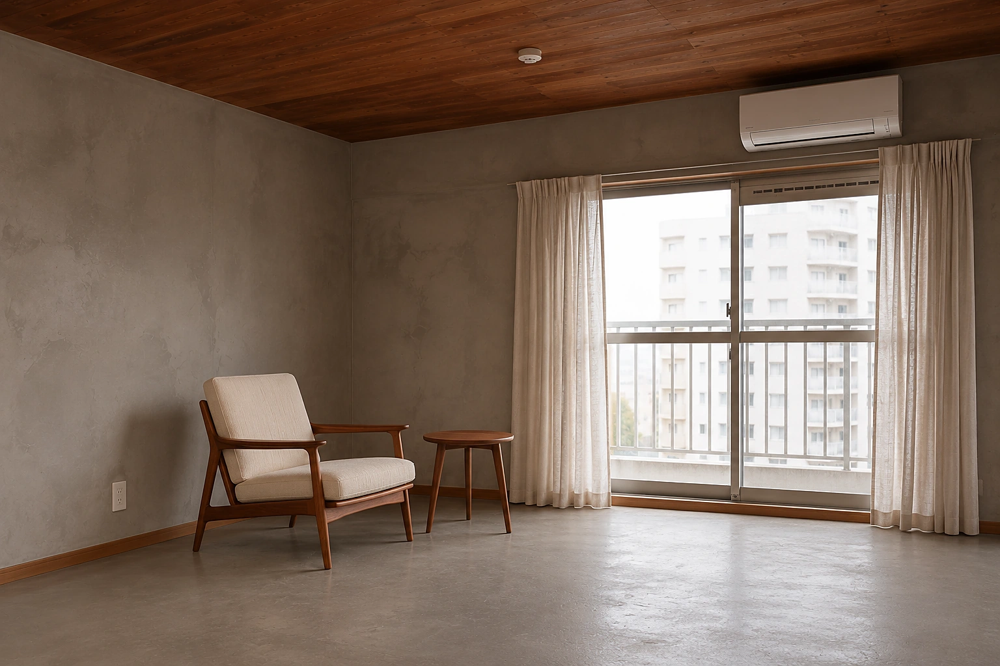
窓口が分かれないので、物件・設計・工事の間で予算がずれません。内見にも、設計の担当が同行します。

内見に同行し、壁を抜けるか・配管を動かせるかをその場で見ます。買ってから「できない」が分かることはありません。
暮らし方を聞いて、間取りと素材を決めます。図面と模型で、住んだあとを確かめてから工事に入ります。
福岡の職人と、設計した担当が現場を見ます。工事中の変更も、同じ担当に話せば伝わります。
72㎡
壁に向いていた台所を対面にし、
料理をしながら部屋の全部が見えるようにしました。



3畳
使わなくなった1部屋を分け、
引き戸で閉じられる書斎に。
在宅の日も、生活の音が気になりません。
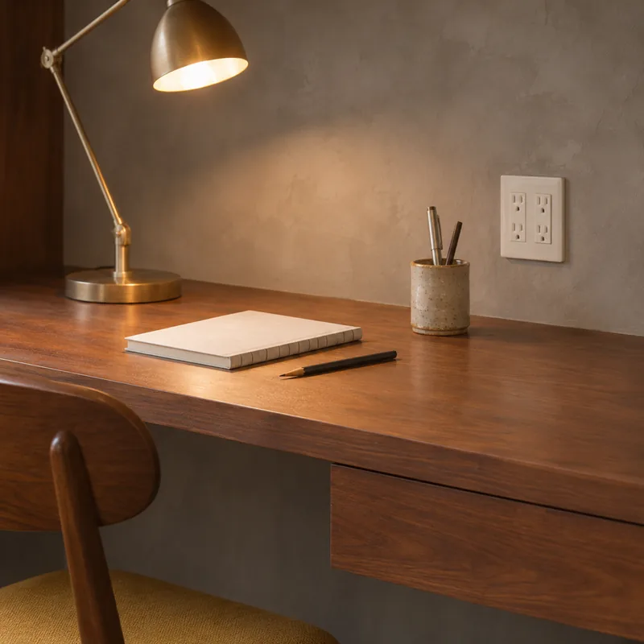


38年
築38年の梁と柱型は隠さずに残し、
天井を木で張りました。
古い建物の形が、そのまま部屋の個性になります。




工事費が動く所収納
平尾の家（72㎡）の総額
60分・無料物件を買う前なら、配分を一緒に決められます。
私たちの総額を相談する1月相談
7月入居
1 相談60分・無料。総額の目安を決めます。設計の担当が内見に同行するため、新しいご相談は月4組まで。


「この壁は抜けます」が決め手。
買う前に相談して、予算を物件に使いすぎずに済みました。内見で「この壁は抜けます」と言ってもらえたのが決め手です。
平尾 72㎡
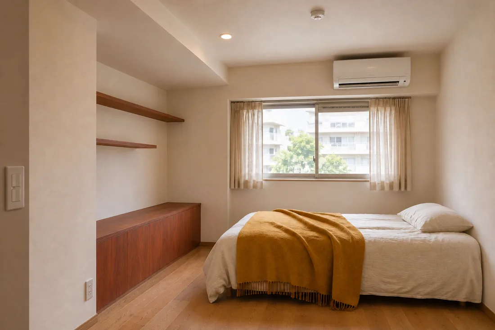
残った予算の、かけどころ。
物件を買ってから相談しました。残った予算の中で、どこにお金をかけるかを一緒に決めてくれました。
薬院 64㎡

最初の60分で、目安が分かった。
オンラインで2回相談してから来店しました。最初の60分で総額の目安が分かったので、安心できました。
大濠 81㎡